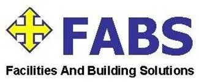
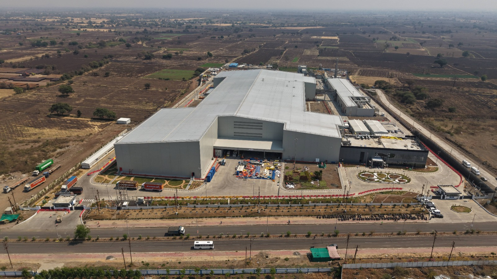
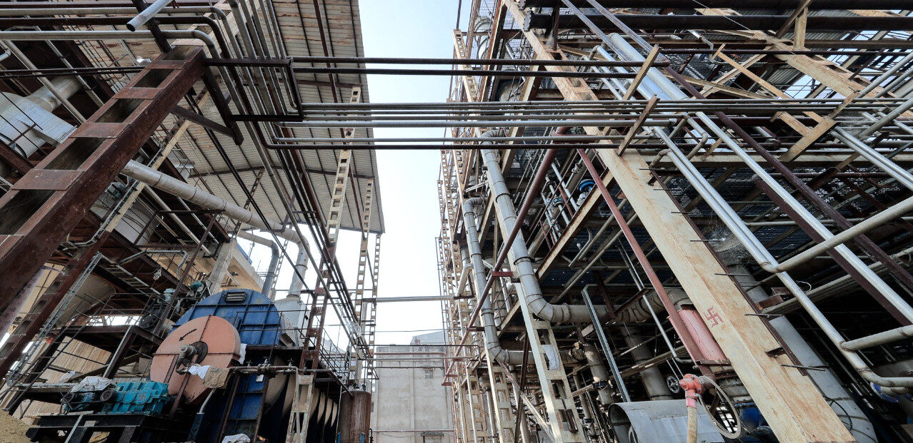
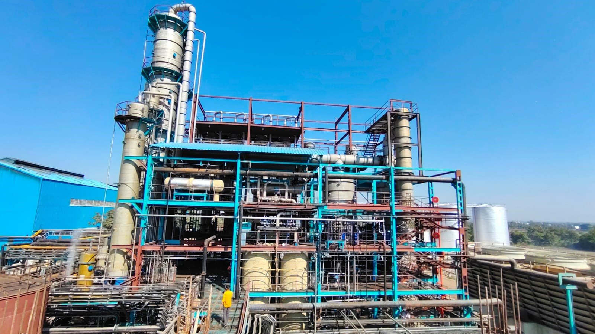
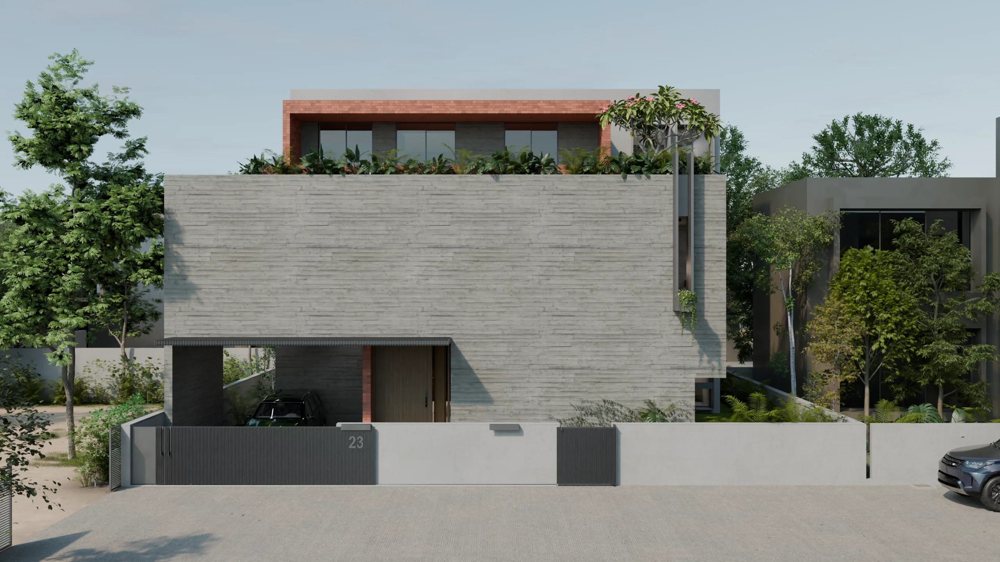
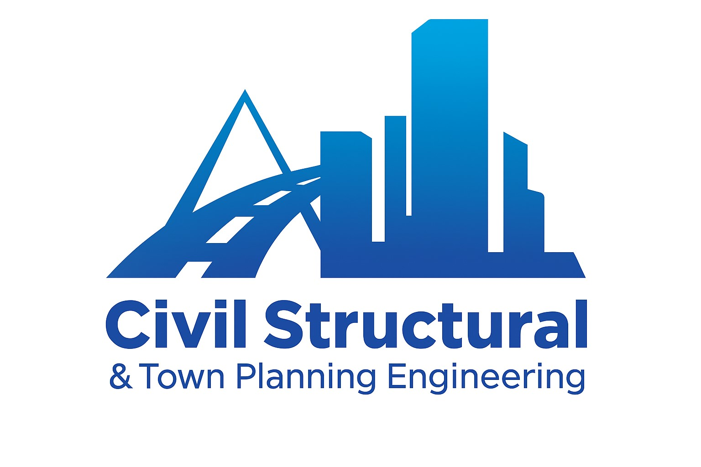
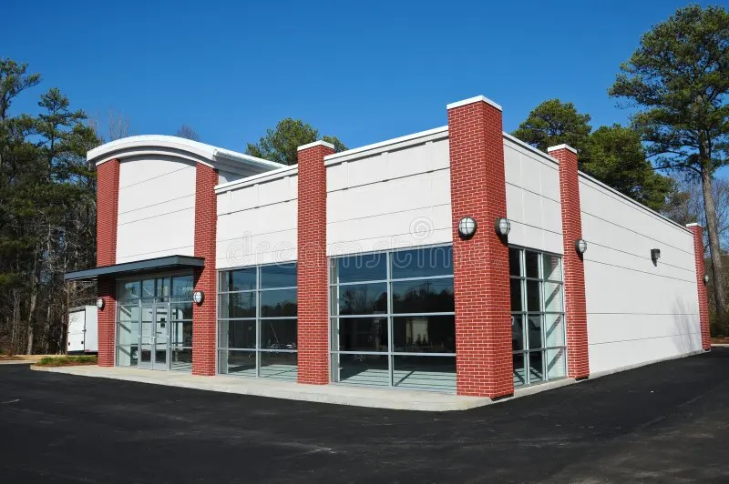

December 2024 – PresentSenior Project Engineer/ Change Manager
Facilities And Building Solutions (FABS) – Client: PepsiCo India Holdings Pvt. Ltd.
- Oversaw document control for 300+ IQ/OQ/PQ/submittals, ensuring 100% traceability
- Established a comprehensive cashflow tracker covering 25+ vendors
- Generated $1.5M+ in savings through change order analysis, valuated change orders exceeding $10M in value
- Facilitated daily and weekly lookahead sessions with 10+ contractor teams
- Delivered 98% compliance with billing milestones
- Designed and maintained a 3-tier tracking framework spanning 30+ work packages
Click to see full details


December 2022 – November 2024Project In-Charge
Chnadrika Power Private Limited
- Managed project scope, schedules, resources, budgets, and delivery milestones to ensure successful execution.
- Coordinated engineering teams, site staff, quality, sales, suppliers, and operations to maintain smooth collaboration.
- Established KPIs, reporting structures, and risk registers to track performance and mitigate potential issues.
- Created and updated 2D technical drawings in AutoCAD with accuracy and compliance to standards.
- Monitored project billing and cashflow by tracking invoices, payments, and forecasts.
- Ensured alignment with regulatory requirements, quality standards, and compliance frameworks throughout the project.
Click to see full details

December 2021 – November 2022Site In-Charge
Mekalsuta Sugar Private Limited
- Coordinated engineering, site teams, quality, sales, suppliers, and operations to align objectives and streamline execution.
- Worked closely with the execution team to drive progress and resolve challenges.
- Delivered over four projects, including a CBG Plant, Distillery, Storage Lagoon, and Water Treatment Plant.
- Reduced project risks by 30% and shortened timelines by 20%, improving efficiency.
- Managed stakeholder communication and coordinated delivery schedules for transparency.
Click to see full details


July 2020 – October 2021Site Engineer
Almighty Assiciates
- Consistently maintained high-quality standards, achieving performance levels of up to 95% across deliverables.
- Ensured client expectations were successfully met, with satisfaction levels reaching approximately 95%.
- Coordinated effectively with both interior and structural design teams, fostering alignment and seamless integration of project requirements.
- Managed and executed two or more projects simultaneously across different sites, demonstrating strong multitasking and organizational skills.
- Provided clients with optimal budget planning and support, ensuring cost efficiency while maintaining quality outcomes.
Click to see full details


July 2019 – March 2020Site Engineer
Bhupendra Singh & Associates
- Prepared and delivered detailed property valuation reports for more than 20 cases, ensuring accuracy and reliability for client decision-making.
- Successfully completed three residential projects in Indore, meeting quality benchmarks and client expectations.
- Assisted in the execution of two commercial projects in Indore, contributing to design, planning, and smooth delivery.
- Ensured consistently high-quality construction work, maintaining standards across all phases of project execution.
- Supported design development using AutoCAD 2D, providing precise drawings and technical inputs to enhance project efficiency.
Click to see full details